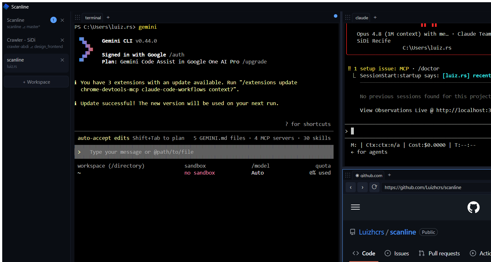

Run AI agents on Windows without friction. Split terminals, open a real browser, and keep a human in the loop — all in one window.

One window. Terminals, browser, pipe, and approval gates — natively on Windows.
Open as many terminal panes as you need, side by side. Resize, zoom, and switch between them without touching the mouse.
A real browser lives inside the same window. Agents can see the page, click buttons, and fill forms — no separate app needed.
Claude Code, Codex, or any AI tool launches directly inside Scanline. Each agent gets its own pane, and you see everything happening live.
Open panes, navigate the browser, or send commands to Scanline from any script or tool — no manual clicking required.
Agents can pause and wait for your confirmation before taking risky actions. One click to approve or deny — you stay in control.
Your layout, open tabs, and workspaces are saved automatically. Reopen Scanline and everything is exactly as you left it.
No extra software required. Just download, install, and open.
Download the installer from the latest release and run it. Everything it needs is bundled.
Drop scanline.exe anywhere on your system so scripts and agents can talk to the running window.
Open Scanline, split your first pane, and launch an agent. Your workspace is ready.